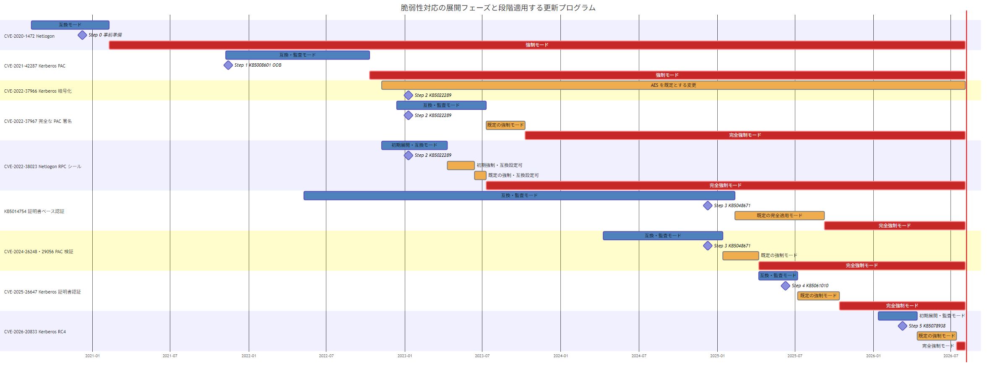

本記事はマイクロソフト社員によって公開されております。
(作成にあたり Copilot の力を借りています)
こんにちは。Windows Commercial Support Directory Services チームです。
Windows Server 2016 は 2027 年 1 月 12 日にサポート終了を迎えます。本記事は、Windows Server 2016 で稼働するドメイン コントローラーを Windows Server 2022 または Windows Server 2025 へ移行、アップグレードする際の主な考慮事項や手順をまとめたものです。
ドメイン コントローラーの移行にあたっては、移行先 OS の更新プログラムで有効になる脆弱性対応を確認し、移行元 OS にも同じ脆弱性へ対応する更新プログラムを適用しておくことが重要です。移行元と移行先で脆弱性対応の状態をそろえることで、新旧のドメイン コントローラーを並行稼働させる期間の認証動作の互換性を確保します。
移行方式について
ドメイン コントローラーを新しい Windows Server へ移行する方法には、主にインプレース アップグレードとローリング アップグレードがあります。
インプレース アップグレードは、既存のドメイン コントローラー上で OS を新しいバージョンへ直接アップグレードする方式です。サーバー名や IP アドレスなどを維持できる一方、既存 OS の構成や問題を引き継ぐ可能性があり、問題が発生した場合の切り戻しにも制約があります。
ローリング アップグレードは、新しい OS をクリーン インストールしたサーバーを既存ドメインへ追加し、ドメイン コントローラーへ昇格した後、既存のドメイン コントローラーを順次降格する方式です。新旧のドメイン コントローラーを一時的に並行稼働できるため、複製や認証の正常性を確認しながら段階的に移行できます。
弊社では、既存環境への影響を抑え、問題発生時の切り分けや切り戻しを行いやすくするため、ローリング アップグレードをお勧めします。
詳細は、以下の公開情報をご確認ください。
更新プログラムについての考慮事項
脆弱性対応の段階的な展開
Active Directory、Kerberos、Netlogon、証明書ベース認証などに関する脆弱性対応では、認証への影響を抑えながら対処できるように、更新プログラムの動作が段階的に変更される場合があります。主な段階として、互換 (監査) モードと強制モードがあります。
互換 (監査) モードでは、脆弱性への保護を導入しつつ、従来の動作や脆弱性対応が完了していない認証を一時的に許容します。強制モードへ移行した際に拒否される可能性があるクライアント、アカウント、機器、アプリなどは、監査イベントや警告イベントとして記録されます。この期間にイベントを監視し、影響対象を特定して必要な対処を行います。
強制モードでは、脆弱性対応の要件を満たしていない認証や通信が拒否されます。また、互換 (監査) モードで使用できた一時的な回避設定が無効になり、互換動作へ戻せなくなる場合があります。
すべての脆弱性対応が同じ名称や展開方法を使用するわけではありません。更新プログラムを適用する前に、対象となる脆弱性ごとの公開情報を確認し、現在のフェーズ、互換設定の有無、強制モードへの移行時期、拒否される条件を確認することが重要です。
移行元の脆弱性対応を先に完了する
Windows Server 2022 または Windows Server 2025 のドメイン コントローラーを既存ドメインへ追加する前に、移行先 OS の更新プログラムで有効になる Active Directory、Kerberos、Netlogon、証明書ベース認証などの脆弱性対応を確認します。そのうえで、同じ脆弱性へ対応する Windows Server 2016 向け更新プログラムを、既存のすべてのドメイン コントローラーへ先に適用します。
移行元と移行先では OS ごとに KB 番号が異なりますが、同じ脆弱性への対応が有効であり、認証プロトコルの動作に互換性がある状態へそろえることが目的です。Windows Server 2016 側で必要な脆弱性対応、監査イベントへの対処、主要な認証シナリオの確認を完了し、認証および複製が安定していることを確認してから、Windows Server 2022 または Windows Server 2025 へのローリング アップグレードを開始します。
この順序にすると、新しい OS のドメイン コントローラーを追加した時点で、既存の Windows Server 2016 ドメイン コントローラーとの間に脆弱性対応の差異が生じることを避けられます。また、Windows Server 2016 の更新による影響を確認してから OS 移行へ進むため、問題が発生した場合の切り分けも行いやすくなります。
新規サーバーへの更新プログラムの適用順序
新規サーバーに対する更新プログラムの適用は、AD DS の役割をインストールする前でも、ドメイン コントローラーへの昇格後でも実施できます。更新プログラムには OS コンポーネントの修正が含まれるため、役割の有効化前に適用した修正も、後から AD DS をインストールして昇格した際に使用されます。
新しいサーバーには、移行計画で定めた Windows Server 2022 または Windows Server 2025 の累積更新プログラムを適用し、再起動を完了してからドメイン コントローラーへ昇格します。この時点では、既存の Windows Server 2016 ドメイン コントローラー側でも、同じ脆弱性への対応と認証への影響確認が完了している状態とします。
移行前に確認する段階的な脆弱性対応
Active Directory、Kerberos、Netlogon、証明書ベース認証に関する脆弱性対応には、更新プログラムを適用するだけでなく、監査イベントの確認や環境側の修正が必要なものがあります。
以下は、本記事の公開時点における Windows Server 2016 の更新履歴を基準に、移行前に確認する脆弱性対応を分類したものです。更新プログラムの EXPIRED 状態は今後変更される可能性があるため、実際の作業時には更新履歴と各脆弱性の最新情報を再確認してください。
互換 (監査) モード用の更新候補を確認する
各脆弱性対応について、互換 (監査) モードが導入された時期から完全強制フェーズまでに公開された、月例または帯域外 (Out-of-band: OOB) の累積更新プログラムを確認します。本記事の公開時点で EXPIRED と表示されていない更新プログラムがある場合は、段階適用の候補となります。
| 脆弱性対応 | 候補を探す更新時期 | 監査または事前確認の内容 | 強制モードへの移行時期 |
|---|---|---|---|
| CVE-2020-1472 Netlogon | 2020 年 8 月から 2021 年 1 月の月例/OOB | Secure RPC に対応していない非 Windows デバイス、信頼先、Netlogon イベント | 2021 年 2 月に強制 |
| CVE-2021-42287 Kerberos PAC | 2021 年 11 月から 2022 年 9 月の月例/OOB | KDC イベント ID 35、36、37、38、未更新 DC、古い TGT | 2022 年 10 月に強制 |
| CVE-2022-37966 Kerberos 暗号化 | 2022 年 11 月以降の月例/OOB | KDC イベント ID 42、AES キーを保持していないアカウント、明示的に設定された暗号化方式 | 2022 年 11 月に既定の暗号化方式を変更。段階的な強制フェーズなし |
| CVE-2022-37967 完全な PAC 署名 | 2022 年 12 月から 2023 年 6 月の月例/OOB | KDC イベント ID 43、44、Kerberos 委任、サードパーティー実装 | 2023 年 7 月に既定で強制、2023 年 10 月に完全強制 |
| CVE-2022-38023 Netlogon RPC シール | 2022 年 11 月から 2023 年 3 月の月例/OOB | Netlogon イベント ID 5838、5839、非 Windows デバイス、信頼先 | 2023 年 4 月に初期強制、2023 年 6 月に既定で強制、2023 年 7 月に完全強制 |
| KB5014754 証明書ベース認証 | 2022 年 5 月から 2025 年 1 月の月例/OOB | KDC イベント ID 39、40、41、弱い証明書マッピング | 2025 年 2 月に既定で完全適用、2025 年 9 月に完全強制 |
| CVE-2024-26248、CVE-2024-29056 PAC 検証 | 2024 年 4 月から 12 月の月例/OOB | Security-Kerberos イベント ID 23、未更新 DC、リソース サーバー、信頼先 | 2025 年 1 月に既定で強制、2025 年 4 月に完全強制 |
| CVE-2025-26647 Kerberos 証明書認証 | 2025 年 4 月から 6 月の月例/OOB | KDC イベント ID 45、証明書の発行元 CA、NTAuth ストア | 2025 年 7 月に既定で強制、2025 年 10 月に完全強制 |
| CVE-2026-20833 Kerberos RC4 | 2026 年 1 月から 6 月の月例/OOB | KDC イベント ID 201、202、206、207、AES 非対応のクライアント、サービス アカウント、アクセス先 | 2026 年 4 月に既定で強制、2026 年 7 月に完全強制 |
候補となる更新プログラムが見つかった場合は、個別の記事で目的の脆弱性対応と互換 (監査) モードが含まれることを確認します。その後、すべてのドメイン コントローラーおよび脆弱性対応に関与するサーバーへ適用し、監査イベントを一定期間収集します。検知した対象へ対処した後に、次の累積更新プログラムへ進みます。
候補がすべて EXPIRED となっている場合、または候補に目的の互換 (監査) モードが含まれない場合は、強制モードへ直接移行するものとして扱います。OOB 更新プログラムの状態は今後変更される可能性があるため、本表は利用可能性を保証するものではありません。
長期間更新されていない環境での進め方
長期間更新されていない Windows Server 2016 へ新しい累積更新プログラムを適用すると、過去に段階的に展開された複数のセキュリティ変更がまとめて有効になります。このため、最新の累積更新プログラムへ進む前に、上表を基に、現在利用できる更新プログラムで互換 (監査) モードを経由できる脆弱性対応と、強制モードへ直接移行する脆弱性対応を整理します。
Windows 10 and Windows Server 2016 update history で、月例と OOB の両方を確認します。EXPIRED と表示された更新プログラムは候補から除外し、設計時と実施直前に、候補の提供状態、修正内容、置き換え関係、前提条件、既知の問題を個別記事でご確認ください。
互換 (監査) モードを利用できる場合は、監査イベントから影響対象を特定して対処した後、次の更新プログラムへ進みます。利用できない場合は、強制モードの拒否条件を基に、暗号化方式、サービス アカウント、委任、信頼、証明書ベース認証、Netlogon、非 Windows 機器などを更新前に確認します。
各 Step の前には、Active Directory の正常性とバックアップ、主要な認証シナリオ、作業の中止基準を確認します。更新後は監査またはエラー イベントと認証結果を確認し、必要に応じてクライアントやサービスを再起動して新しい Kerberos チケットを取得します。
2020 年の更新状態から段階的に更新する例
長期間更新プログラムを適用していない環境の一例として、すべての Windows Server 2016 ドメイン コントローラーが 2020 年 12 月の累積更新プログラムで止まっているパターンを取り上げます。
以下は、このパターンから段階的な脆弱性対応を最短の手順で進めるシミュレーションです。本記事の公開時点で EXPIRED と表示されていない OOB 更新プログラムも候補に含めています。実際に使用する更新プログラムは、対象環境の現在の更新状態を起点として、作業時点の更新履歴、個別記事、既知の問題、置き換え関係を確認して決定してください。
次の図は、各脆弱性対応の互換 (監査) モード、既定動作、強制モード、完全強制モード、および本例で適用する更新プログラムの位置関係を示しています。横軸が時間、縦軸が脆弱性対応です。青色の期間が互換 (監査) モード、橙色の期間が更新後の既定動作または完全強制前の強制段階、赤色の期間が完全強制モード、ひし形が更新プログラムの適用位置を示します。強制と完全強制が分かれていない脆弱性対応は、最終的な強制フェーズを赤色で示します。

上記の図の通り、適用する更新プログラムが、次に確認する脆弱性対応の互換 (監査) モード内に収まっていることが確認できます。KB5022289 では 2022 年の 3 つの脆弱性対応を、KB5048671 では証明書ベース認証と 2024 年の PAC 検証を同時に監査し、少ない適用回数で複数の脆弱性対応となるようにしております。
Step 0: 正常性を確認してバックアップを取得する
この例では、2020 年 12 月の更新状態で確認できる Netlogon のイベント ID 5829 を基に、Secure RPC に対応していないデバイスの特定と対処が完了しており、CVE-2020-1472 への対応に問題がない状態を前提とします。
Step 0 は更新プログラムを適用する手順ではなく、段階更新を開始する前の事前準備です。後述の「ドメイン コントローラーの正常性確認」に従って現在の状態を確認し、後続の各 Step で比較する基準として結果を保存します。
万が一の障害に備えて、すべてのドメイン コントローラーでシステム状態バックアップの取得をご検討ください。取得方法とリストア手順の詳細は、以下の記事をご確認ください。
Step 1: 2021 年 11 月の OOB 更新で CVE-2021-42287 の監査を開始する
本記事の公開時点では、2021 年 11 月 14 日の OOB 更新プログラム KB5008601 に EXPIRED の表示はありません。この OOB 更新プログラムを適用する目的は、CVE-2021-42287 の互換モードを有効にし、強制モードで拒否される可能性がある Kerberos チケットをイベント ID 35、36、37、38 で事前に監査することです。
2021 年 11 月の月例累積更新プログラム KB5007192 は EXPIRED となっていますが、その修正を累積的に含む KB5008601 は本記事の公開時点で EXPIRED と表示されていないため、CVE-2021-42287 の互換モードへ移行する候補として使用します。また、KB5008601 には同月の既知の Kerberos 認証問題に対する修正も含まれます。
すべてのドメイン コントローラーへ適用した後、Kerberos チケットの有効期間を考慮して 1 週間以上運用し、KDC のイベント ID 35、36、37、38 を確認します。イベントが記録された場合は、未更新のドメイン コントローラー、古い TGT、サードパーティー実装など、イベントに対応する原因を解消します。
Step 2: 2023 年 1 月の累積更新プログラムで 3 つの脆弱性対応をまとめて監査する
2023 年 1 月 10 日の累積更新プログラム KB5022289 を、ドメイン コントローラーと脆弱性対応に関係するメンバー サーバーへ適用します。本記事の公開時点では、KB5022289 に EXPIRED の表示はありません。
この更新プログラムを適用する目的は、次の 3 つの脆弱性対応を互換または監査フェーズでまとめて確認することです。
- CVE-2022-37966: イベント ID 42 により Kerberos の暗号化方式に関する問題を確認する
- CVE-2022-37967: 監査モードでイベント ID 43、44 を確認する
- CVE-2022-38023: 互換モードでイベント ID 5838、5839 を確認する
KB5021654 は 2022 年 11 月相当の修正を含みますが、CVE-2022-37967 のイベント ID 43、44 が記録される監査モードは 2022 年 12 月以降です。このため、本シミュレーションでは KB5021654 を Step 2 の候補とせず、3 つの確認を同時に実施できる KB5022289 を使用します。
適用後は Kerberos チケットの有効期間を考慮して 1 週間以上監視し、検知した対象へ各脆弱性の記事に記載された対処を行います。
Step 3: 2024 年 12 月の累積更新プログラムで証明書認証と PAC 検証を監査する
2024 年 12 月 10 日の累積更新プログラム KB5048671 を、ドメイン コントローラーと PAC 検証に関係するリソース サーバーへ適用します。
この Step では、KB5014754 の証明書ベース認証について KDC のイベント ID 39、40、41 を確認します。また、CVE-2024-26248 および CVE-2024-29056 の PAC 検証について、リソース サーバーの Security-Kerberos イベント ID 23 を確認します。弱い証明書マッピング、未更新のドメイン コントローラー、信頼先など、検知した対象を強制モードへ進む前に解消します。
Step 4: 2025 年 6 月の累積更新プログラムで CVE-2025-26647 を監査する
2025 年 6 月 10 日の累積更新プログラム KB5061010 をドメイン コントローラーへ適用します。この時点で、前の Step までに監査した脆弱性対応は強制モードへ移行するため、各イベントへの対処が完了していることを事前に確認します。
適用後は CVE-2025-26647 の KDC イベント ID 45 を確認します。認証に使用する証明書の発行元 CA が NTAuth ストアに登録されているかを確認し、検知した対象へ対処します。
Step 5: 2026 年 3 月の累積更新プログラムで CVE-2026-20833 を監査する
2026 年 3 月 10 日の累積更新プログラム KB5078938 をドメイン コントローラーへ適用します。この更新時点では CVE-2026-20833 の初期展開フェーズで動作するため、KDC のイベント ID 201、202、206、207 を監査できます。
AES に対応していないクライアント、AES キーを保持していないサービス アカウント、AES で暗号化されたサービス チケットを処理できないアクセス先などを特定し、各イベントと公開情報に従って対処します。
Step 6: 移行元と移行先の更新状態をそろえる
Step 1 から Step 5 までの監査イベントへの対処が完了し、主要な認証、複製、DNS、SYSVOL に問題がないことを確認します。
移行先となる Windows Server 2022 または Windows Server 2025 に、Windows Server 2016 へ適用した更新プログラムと同じリリース月の月例累積更新プログラムを適用します。OS ごとに KB 番号は異なるため、それぞれの更新履歴から同じ月に対応する KB を選びます。
- Windows 10 and Windows Server 2016 update history
- Windows Server 2022 update history
- Windows Server 2025 update history
移行先 OS の再起動を完了し、Windows Server 2016 と移行先 OS で脆弱性対応の状態がそろったことを確認します。その後、新しいサーバーをドメイン コントローラーとして追加し、主要な認証シナリオを確認しながらローリング アップグレードを進めます。
今後の更新プログラムの適用について
脆弱性対応の互換 (監査) モードを活用し、強制モードへ移行する前に影響対象を確認できるようにするため、ドメイン コントローラーには更新プログラムをタイムリーに適用することをお勧めします。OS の移行時にまとめて更新するのではなく、毎月公開される更新情報、既知の問題、段階的に展開されるセキュリティ変更を確認し、検証および変更管理を行ったうえで継続的に適用してください。
更新プログラムの適用を長期間見送ると、互換 (監査) モードを利用できる期間を過ぎ、後から更新した際に強制モードへ直接移行する場合があります。その結果、事前に監査イベントから影響対象を確認する機会が得られず、認証への影響を予測しにくくなります。
本ブログでも、Active Directory の認証動作に影響する更新プログラム、段階的な展開の予定、監査イベント、強制モードへ移行する前に必要な対処などについて、引き続き情報を発信してまいります。更新プログラムを適用する際は、Windows の更新履歴や Microsoft Learn とあわせて、本ブログの関連情報もご確認ください。
ドメイン コントローラーの正常性確認
移行前の Active Directory に複製エラーや DNS の問題がある場合、新しいドメイン コントローラーを追加しても問題は解消せず、初回複製の失敗などにつながる可能性があります。移行の前後で、すべてのドメイン コントローラーの正常性を確認します。
主な確認項目は以下のとおりです。
dcdiag /e /c /vの結果repadmin /replsummaryの結果repadmin /showrepl * /csvの結果- Directory Service、DFS Replication、DNS Server、System の各イベント ログ
- SYSVOL および NETLOGON 共有の状態
- DNS の名前解決とドメイン コントローラー ロケーターの動作
- FSMO 役割、グローバル カタログ、サイトおよびサブネットの構成
確認方法の詳細は、以下の記事をご参照ください。
ドメインおよびフォレストの機能レベル
移行先 OS に必要な機能レベルは以下のとおりです。
- Windows Server 2022: フォレスト機能レベル Windows Server 2008 以上
- Windows Server 2025: ドメインおよびフォレスト機能レベル Windows Server 2016 以上
移行前に現在のドメインおよびフォレスト機能レベルを確認し、必要な機能レベルに達していない場合は、新しいドメイン コントローラーを昇格する前に引き上げます。機能レベルは自動的には変更されません。
機能レベルを変更する場合は、Active Directory の複製が正常であること、バックアップを取得済みであること、すべてのドメイン コントローラーが引き上げ先の機能レベルをサポートしていることを確認します。ドメイン機能レベルを先に引き上げ、その後にフォレスト機能レベルを引き上げます。
Windows Server 2022 へ移行する場合の追加注意事項
本記事で整理した範囲では、Windows Server 2022 への移行について、後述する Windows Server 2025 固有の注意事項に相当する追加事項はありません。
ただし、更新プログラムと脆弱性対応の整合、Active Directory の正常性、機能レベル、SYSVOL の DFSR 移行、バックアップなど、本記事に記載した共通の要件は Windows Server 2022 への移行時にもご確認ください。
Windows Server 2025 へ移行する場合の追加注意事項
Windows Server 2025 では、Active Directory と認証に関する既定のセキュリティ設定や暗号化方式が強化されています。
Windows Server 2025 のドメイン コントローラーを追加する場合は、前述の機能レベルと更新プログラムの要件に加えて、以下の項目を昇格前にご確認ください。
参考: KRBTGT アカウントと AES キー
Windows Server 2025 のドメイン コントローラーは RC4 で暗号化された TGT を発行しません。
既存ドメインで KRBTGT アカウントに AES キーがない場合は、Kerberos 認証やログオンに失敗する可能性があります。
KRBTGT アカウントと AES キーの確認は、前述の「Step 2: 2023 年 1 月の累積更新プログラムで 3 つの脆弱性対応をまとめて監査する」に含まれています。
Windows Server 2025 のドメイン コントローラーを昇格する前に Step 2 を完了し、イベント ID 42 が記録された場合は、公開情報に従って KRBTGT アカウントのパスワード更新を計画してください。
パスワード更新は既に発行された TGT や認証済みセッションへ影響する可能性があるため、Active Directory の複製、システム状態バックアップ、メンテナンス時間、再認証方法を事前にご確認ください。
Linux デバイスのドメイン参加を事前に検証する
Windows Server 2025 のドメイン コントローラーに Linux デバイスを参加させる構成では、使用する Linux ディストリビューション、Samba、SSSD、realmd などのバージョンと、Kerberos、LDAP、DNS の設定をご確認ください。
Windows Server 2025 には 2025 年 9 月 9 日の KB5065426 以降で Active Directory とネットワークに関する複数の修正が含まれているため、最新の累積更新プログラムを適用した検証環境で、ドメイン参加、ログオン、グループ解決、Kerberos チケットの取得を事前にご確認ください。
スキーマ拡張前に更新プログラムを適用する
Windows Server 2025 のドメイン コントローラーが FSMO 役割を保持する環境では、一意の値が必要な複数値属性へ重複した値を追加でき、スキーマの不一致によって Active Directory のレプリケーション エラーが発生する問題がありました。
この問題は 2025 年 11 月 11 日の KB5068861 で修正されています。
Exchange などの製品によるスキーマ拡張を行う前に、スキーマ マスターを含む Windows Server 2025 のドメイン コントローラーへ KB5068861 以降の累積更新プログラムを適用してください。
スキーマ拡張前後には、repadmin /replsummary と repadmin /showrepl * /csv を使用して、すべてのドメイン コントローラー間の複製が正常であることをご確認ください。
LDAP 署名の既定値を確認する
Windows Server 2025 以降の新しい Active Directory 展開では、[ドメイン コントローラー: LDAP サーバー署名要件の適用] ポリシーによって LDAP 署名が既定で必要です。
Windows Server 2025 へのインプレース アップグレードでは既存の LDAP セキュリティ設定が保持されるため、展開方式によって適用される設定が異なります。
ローリング アップグレードで Windows Server 2025 のドメイン コントローラーを追加する場合も、昇格前後にこのポリシーと [ドメイン コントローラー: LDAP サーバー署名必須] の実効設定をご確認ください。
イベント ID 2887 などを監視し、署名されていない LDAP バインドを行うクライアント、機器、アプリを特定して、署名付き LDAP または LDAPS へ移行します。
互換性のために署名要件を緩和する場合は、一時的な変更として期限と対象を定め、可能な限り早く署名を有効に戻すことをお勧めします。
参考: RC4 のみに依存するアカウントと機器
2026 年 4 月の KB5082063 以降では、CVE-2026-20833 への対応として、Kerberos サービス チケットで使用する既定の暗号化方式が AES に変更されています。
RC4 のみに依存するアカウント、クライアント、機器への対応は、前述の「Step 5: 2026 年 3 月の累積更新プログラムで CVE-2026-20833 を監査する」に含まれています。
Windows Server 2025 のドメイン コントローラーへ 2026 年 4 月以降の更新プログラムを適用する前に Step 5 を完了し、イベント ID 201、202、206、207 と、アクセス先の機器やサービスが AES に対応していることをご確認ください。
CVE-2026-20833 のサービス チケット変更は主に SPN が登録されたアカウントに影響しますが、Windows Server 2025 では RC4 で暗号化された TGT が発行されないため、SPN の有無だけでログオンへの影響を判断しないでください。
長期間パスワードを変更していない組み込み Administrator なども含め、ログオンに使用する重要なアカウントが AES キーを保持していることをご確認ください。
NTLMv1 への依存がないことを確認する
Windows Server 2025 では NTLMv1 が削除されており、[ネットワーク セキュリティ: LAN Manager 認証レベル] ポリシーや LmCompatibilityLevel の設定にかかわらず、NTLMv1 の認証要求は行われません。
NTLMv2 は引き続き使用できますが、NTLM 自体も非推奨であり、将来の無効化に向けた準備が必要です。
Windows Server 2025 への移行前に NTLM の監査を有効にし、サポートが終了した OS、ネットワーク機器、IP アドレスを指定した接続、SPN が登録されていないアプリなど、NTLM に依存する処理を特定します。
NTLMv1 を使用するシステムは、NTLMv2 または Kerberos へ移行してください。
SYSVOL 複製方式の確認
Windows Server 2016 は、FRS を使用した SYSVOL 複製をサポートする最後の Windows Server リリースです。Windows Server 2019、Windows Server 2022、Windows Server 2025 のドメイン コントローラーを追加するには、SYSVOL の複製方式が DFSR へ移行済みである必要があります。
移行前に、以下のコマンドで現在の状態を確認します。
1 | dfsrmig /getglobalstate |
dfsrmig /getglobalstate の結果が Eliminated (3)、日本語環境では「削除済み」であることを確認します。また、dfsrmig /getmigrationstate の結果で、すべてのドメイン コントローラーがグローバル状態 Eliminated へ正常に移行し、移行状態が一貫していることを確認します。
いずれかのドメイン コントローラーが Eliminated に到達していない場合や、移行状態が一貫していない場合は、新しいドメイン コントローラーを追加する前に FRS から DFSR への移行を完了します。
バックアップと復旧手順
構成変更の前に、すべてのドメイン コントローラーでシステム状態バックアップの取得をご検討ください。取得方法とリストア手順の詳細は、以下の記事をご確認ください。
バックアップの取得だけでなく、障害発生時にどの時点で作業を中止するか、追加したドメイン コントローラーをどのように切り離すか、Active Directory の権威のない復元または権威のある復元が必要となる条件も事前に整理します。
新しいドメイン コントローラーの昇格
新しいサーバーは、ワークグループの状態からドメイン参加とドメイン コントローラーへの昇格を同時に行うのではなく、いったん既存ドメインのメンバー サーバーとして参加させた後に昇格する方法をお勧めします。
先にメンバー サーバーとして参加させると、名前解決、ドメイン参加、セキュア チャネル、時刻同期、必要な通信ポートなどの問題を昇格前に切り分けられます。ドメイン参加に関する問題と昇格処理の問題を分けて確認できるため、昇格時のトラブルを減らすことができます。
最初の新しいバージョンのドメイン コントローラーを追加する際は、スキーマ マスターおよびインフラストラクチャ マスターへ接続できる必要があります。必要な adprep /forestprep および adprep /domainprep は、昇格処理中に自動的に実行されます。
昇格後は、次の作業へ進む前に、初回複製、SYSVOL および NETLOGON 共有、DNS 登録、グローバル カタログ、イベント ログを確認します。一度に複数台を切り替えず、1 台ずつ正常性を確認しながら移行します。
コンピューター アカウントを再利用する構成では、ドメイン参加に関するセキュリティ強化の影響も確認します。
FSMO 役割とサービスの移行
新しいドメイン コントローラーの正常性を確認した後、必要に応じて FSMO 役割を移行します。PDC エミュレーターを移行した場合は、外部時刻ソースを含む Windows Time サービスの構成を確認します。
DNS、DHCP、証明機関、NPS、Microsoft Entra Connect などを既存のドメイン コントローラーへ同居させている場合、AD DS の移行とは別に各役割およびアプリの移行計画が必要です。ドメイン コントローラーを降格する前に、依存するサービスが残っていないことを確認します。
古いドメイン コントローラーの降格
既存の Windows Server 2016 ドメイン コントローラーを降格する前に、以下を確認します。
- 新しいドメイン コントローラー間の複製が正常である
- SYSVOL および NETLOGON 共有が存在する
- DNS の委任、フォワーダー、条件付きフォワーダー、逆引きゾーンが移行済みである
- DHCP、ネットワーク機器、アプリ、スクリプトなどの DNS 参照先が変更済みである
- FSMO 役割およびグローバル カタログの配置に問題がない
- 降格対象を固定参照している LDAP、Kerberos、時刻同期などの設定がない
- 有効なシステム状態バックアップがある
正常なドメイン コントローラーは、サーバーを停止または削除するだけでなく、必ず通常の降格手順で AD DS を削除します。通常の降格ができない場合に限り、強制降格とメタデータ クリーンアップを検討します。
まとめ
Windows Server 2016 から新しい Windows Server へドメイン コントローラーを移行する際は、新しいサーバーだけを最新にするのではなく、移行元と移行先の各 OS に対して同じ脆弱性へ対応する更新プログラムを適用することが重要です。
そのうえで、既存 Active Directory の正常性、SYSVOL の複製方式、機能レベル、バックアップを確認し、ローリング アップグレードで新しいドメイン コントローラーを 1 台ずつ追加して正常性を確認します。最後に古いドメイン コントローラーを通常の手順で降格することで、問題発生時の切り戻し余地を保ちながら移行できます。
更新履歴
- 2026/08/06: 記事を公開しました。